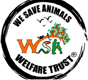
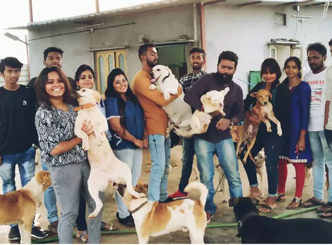
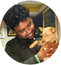

WE SAVE ANIMALS (WSA)
WELFARE TRUST
We are a team of ardent animal lovers driven to help the
voiceless. Being humans, let's be the voice for the voiceless.

what we do
Praveen Kumar L, also called Rider Praveen is an ex-gym
instructor who gave up his job, his means of livelihood,
all his and his family’s assets and savings to start We
Save Animals (WSA) Welfare Trust. From paralyzed, blind,
old aged animals to accident cases, cruelty cases and
terminally ill animals - he takes them all in, giving them
happiness, food and a home in his shelter started for
Praveen in 2013, when he rescued a kitten with a spinal
injury. He nursed it at home, but it passed away after a
week, leaving Praveen to wonder what he could do to help
numerous animals like this, that suffer in silence
ADOPT
MONTHLY
Every donate can make difference in animal in need
DONATE
Every donate can make difference in animal in need
About founder

Praveen Kumar L also affectionately called Rider
Praveen, is an ex-gym instructor who gave up his job,
his means of livelihood, all his and his family’s assets
and savings to start We Save Animals (WSA) Welfare
Trust. From paralysed, blind, old-age animals to
accident cases, cruelty cases and terminally ill animals
- he takes them all in, giving them happiness, food and
a home in his shelter.
It started for Praveen in 2013, when he rescued a kitten with a spinal injury. He nursed it at home, but it passed away after a week, leaving Praveen to wonder what he could do to help numerous animals like this, that suffer in silence.
It started for Praveen in 2013, when he rescued a kitten with a spinal injury. He nursed it at home, but it passed away after a week, leaving Praveen to wonder what he could do to help numerous animals like this, that suffer in silence.
Help the WSA Put a Stop to Animal Cruelty
W
S
A
Follow Us
© 2020. We Save Animals (WSA) Welfare Trust.
All Rights Reserved.
All Rights Reserved.